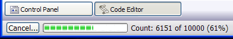
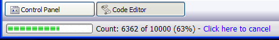

STATUSBAR.ABORT_CHECK()
Syntax
Result_Flag as L = STATUSBAR.ABORT_CHECK()
|
Argument |
Description |
|
Result_Flag |
.T. = The user has clicked an abort button or hyperlink. .F. = No abort button or hyperlink has been clicked. |
Description
The STATUSBAR.ABORT_CHECK() method returns TRUE (.T.) if the user has clicked an abort button or hyperlink on the Status Bar.
Limitations
Desktop applications only.
Example
This example uses the $b syntax in STATUSBAR.PERCENT() to display a "Cancel" button.

|
dim total as N dim i as N statusbar.Abort_Reset() total = 10000 FOR i = 1 TO total statusbar.Percent(i,total,"$b{Cancel...} $g Count: $c of $o ($p%)" if statusbar.Abort_Check()then |
This optional message checks to see if the user really wants to abort the operation.
|
if ui_msg_box("Notice", "Cancel the operation?", UI_QUESTION_SYMBOL+UI_YES_NO) = UI_YES_SELECTED exit for end if |
If the user did not want to abort, simply reset the abort state.
|
statusbar.Abort_Reset() end if ui_yield() next statusbar.clear() |
This example uses the $h syntax in STATUSBAR.PERCENT() to display a "Cancel" hyperlink.

|
dim total as N dim i as N statusbar.Abort_Reset() total = 10000 FOR i = 1 TO total statusbar.Percent(i,total,"$g Count: $c of $o ($p%) - $h{Click here to cancel}") if statusbar.Abort_Check()then if ui_msg_box("Notice", "Cancel the operation?", UI_QUESTION_SYMBOL+UI_YES_NO) = UI_YES_SELECTED exit for end if statusbar.Abort_Reset() end if ui_yield() next statusbar.clear() |
See Also
Status Bar Methods, A5.SYSTEM_MODE_SET()